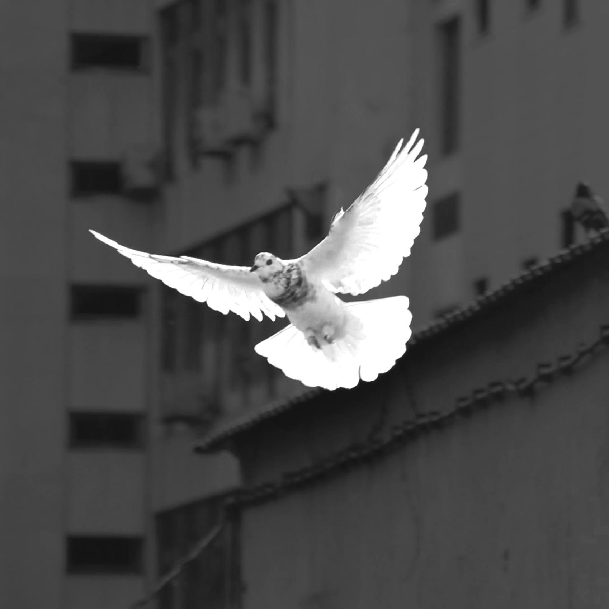

@hodhodTeam - تیم هدهد
گروه دانش بنیان در سال ٨۵، با تکیه بر بیش از هشت سال سابقه مؤثر مؤسسین خود در زمینه IT، فعالیت رسمی خود را آغاز کرد. گروه بیان با بهره گیری از تخصص و تجربه پرسنل خود که اندوخته های گرانقدری را از همکاری در پروژه های جهانی IT و حضور در شرکت های معتبر بین المللی به ارمغان آورده بودند، سعی کرد تا فضای علمی- تحقیقاتی متفاوتی را در صنعت فناوری اطلاعات ایران رقم بزند.